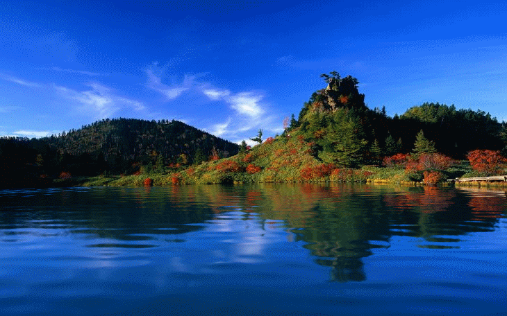
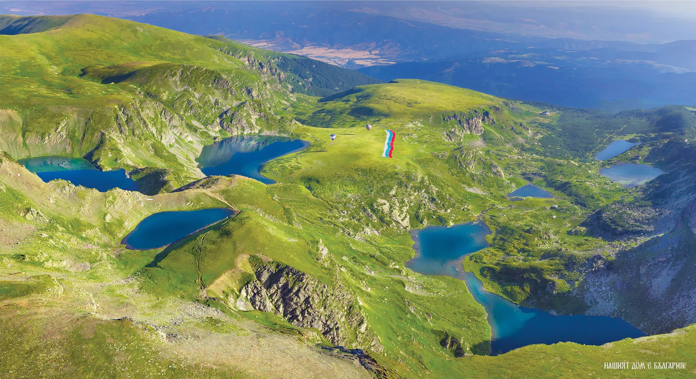

Your browser does not support the audio element.
W E L C O M E to B u l g a r i a
Login form
Email:
Password:
Една Обиколка на България
Your browser does not support the video tag.

The Seven Rila Lakes / Седемте Рилски Езера
The most beautiful place / Най-Хубавото Място
Visit it / Посетете го

This is my favorite destinations / Това са моите любими дестинации
Bulgaria
Foreign countries
1.Shipka Peak -
link
4.Statue of Christ in Rio de Janeiro -
link
2.Belogradchik Rocks -
link
5.Pyramids of Giza, Egypt -
link
3.The Seven Rila Lakes -
link
6.Statue of Liberty, New York, USA -
link
А Н К Е Т А
Мъж
Жена
Коя дестинация ви е любима
Шипка
Белоградчишки скали
Седемте рилски езера
Статуята на Исус в Рио Де Женейро
Пирамидите в Гиза
Статуята на Свободава САЩ
Submit